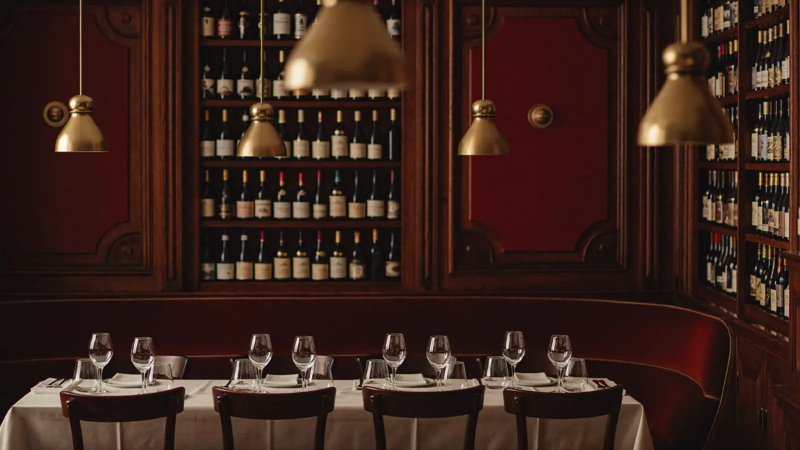
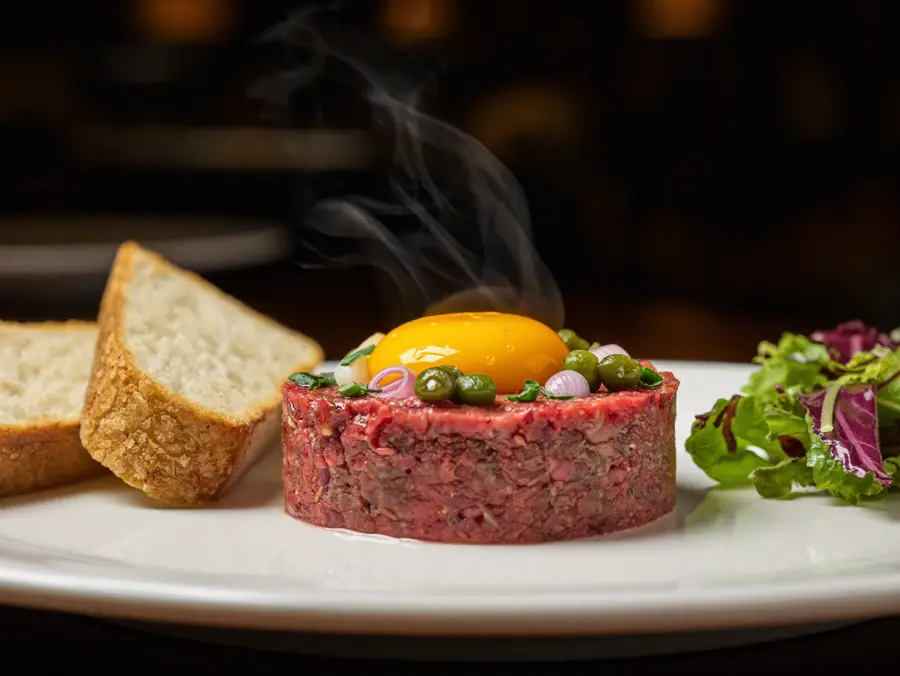
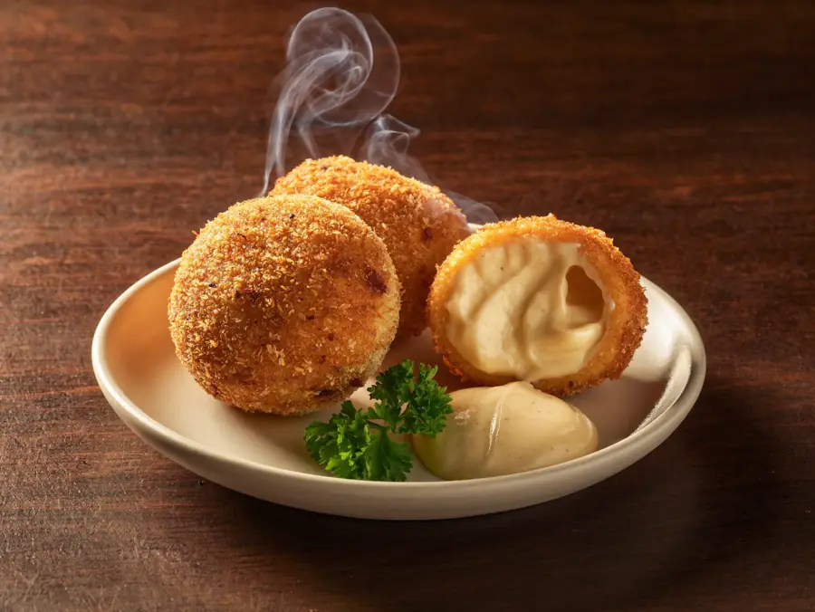

Avinguda d'Europa, 2. Marisco de primera, tapas cuidadas y una bodega que se nota — lejos del restaurante de paso.

La casa
Ô Di Vin está en la Avinguda d'Europa, 2, en Empuriabrava. Cocina con acento francés y producto de mar, servida sin ceremonia pero sin descuidar nada.
De lo que escribe la gente se repiten tres cosas: que las tapas están muy por encima de lo que cuestan, que el servicio es amable y profesional, y que no se parece al restaurante turístico de paso. Eso, en un pueblo con 128 restaurantes, es lo que separa el número 2 del número 60.
Cocina
Los platos que aparecen citados una y otra vez cuando alguien habla de esta casa.

De los platos más nombrados de la carta, junto con el filet américain.

Las que la gente repite cuando dice que aquí las tapas están por encima de su precio.
Producto de primera, que es por lo que la casa se hizo un nombre. Y detrás, una bodega escogida con criterio: el vino no es un añadido aquí, está en el nombre.
Los dos postres que se citan por su nombre en las opiniones.
La posición
Con Certificado de Excelencia, un 4,6 sobre 5 y más de mil opiniones acumuladas entre las distintas plataformas. Eso no lo consigue un sitio de temporada.
Cómo llegar
En la Avinguda d'Europa, en Empuriabrava. Para reservar, mejor llamar o escribir por WhatsApp.
Llamar ahora Abrir en MapsPreguntas frecuentes
Cocina con acento francés y producto de mar, con una bodega cuidada. Las tapas y los entrantes son de lo más nombrado.
El tartar de ternera y el filet américain son los más citados, junto con las croquetas.
Lo que más repite la gente es justo lo contrario: que la calidad está muy por encima de lo que se paga.
En temporada, mejor sí. Se puede llamar o escribir al 622 51 37 09.
En la Avinguda d'Europa, 2, en Empuriabrava (Castelló d'Empúries).